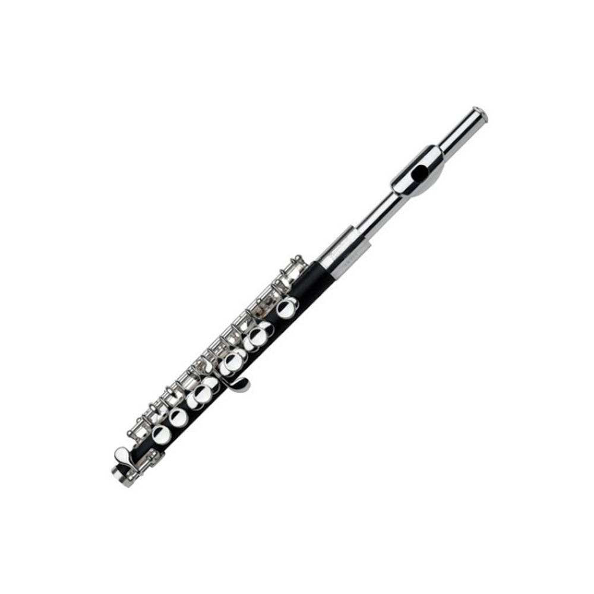
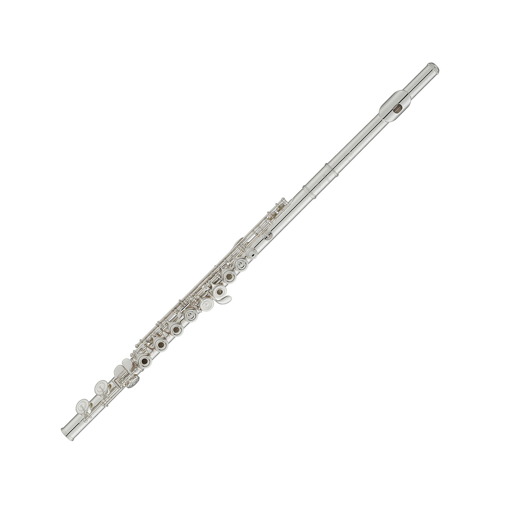
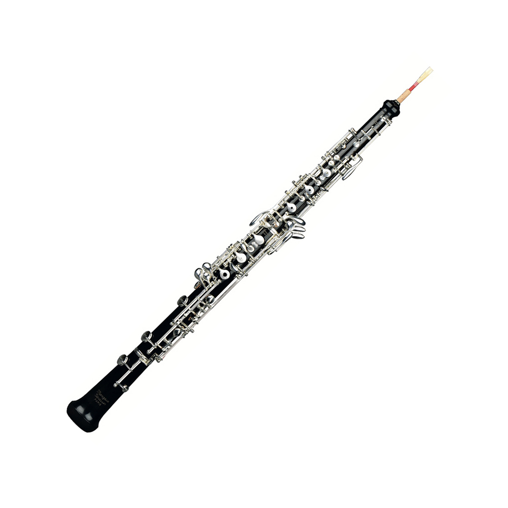
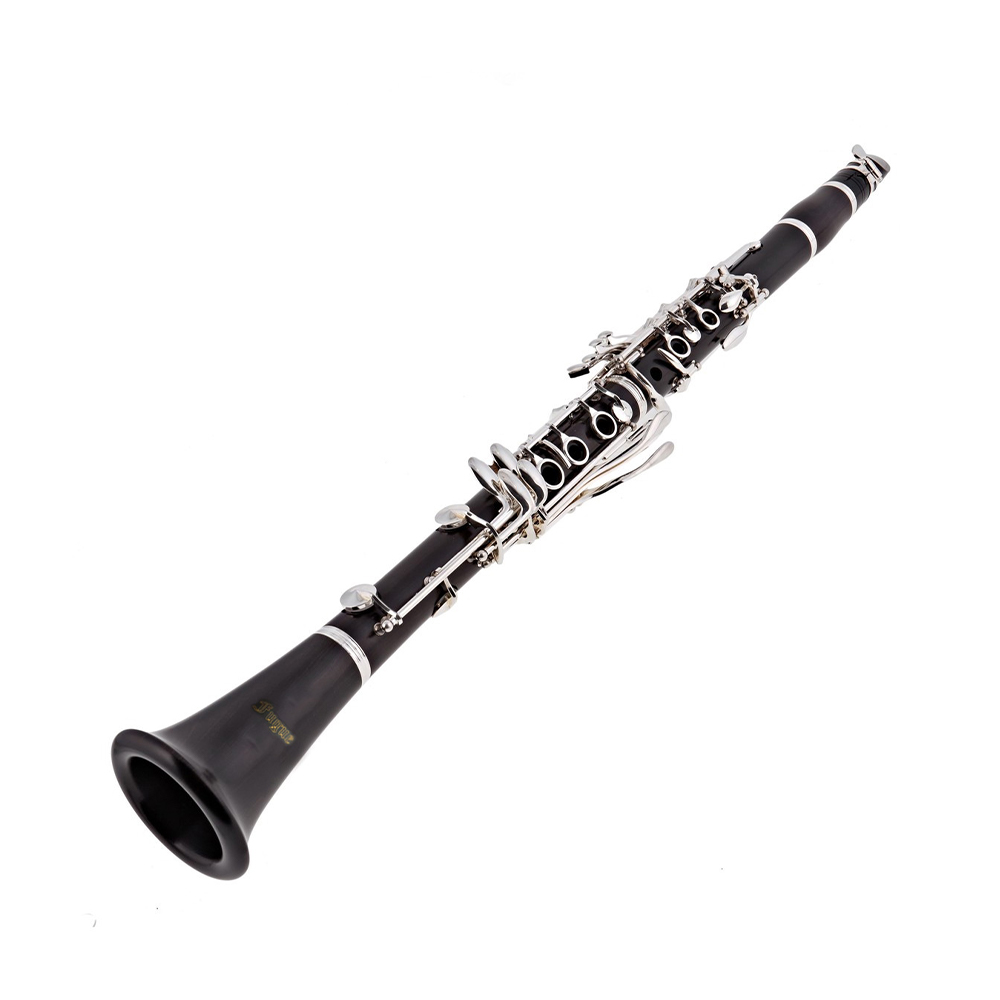
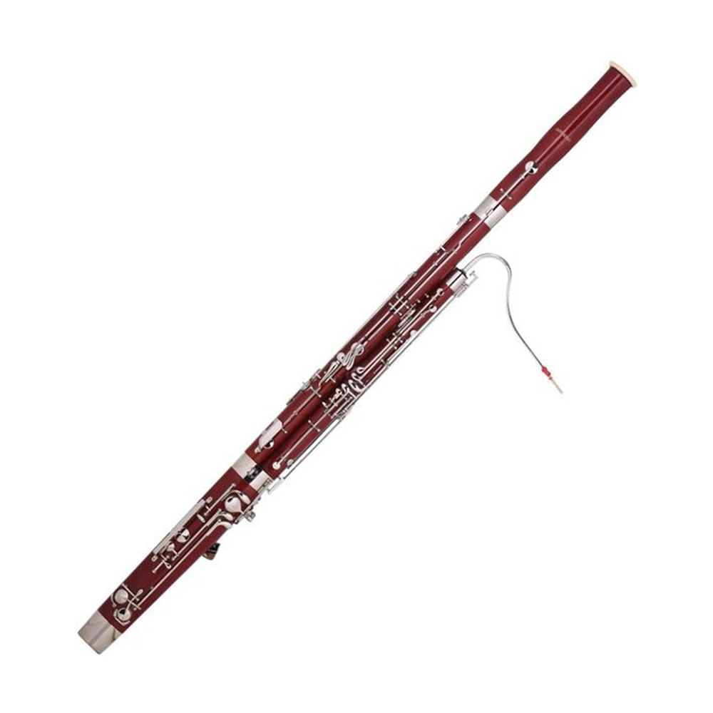
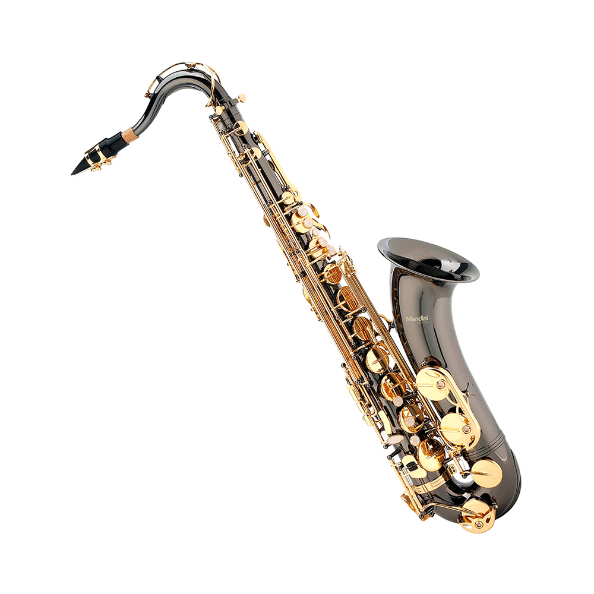

" 가장 작고, 높은 음을 가진 목관악기 "
피콜로는 플루트족의 목관악기이다. 원래는 '작다'라는 뜻으로 많은 나라에서 '작은 플루트' 라는 이름으로 불리고 있다. 플루트의 음 높이보다 더 높은 음을 얻기 위해 만들어진 악기이므로 관의 길이가 플루트의 반이고 음역은 플루트의 1옥타브 위의 소리를 낼 수 있다.
빛나는 듯한 화려한 음을 지녔으나 그 음역의 높이와 함께 사용범위가 한정되어 있어 관현악에서는 특별한 효과를 낼 때만 쓰인다. 취주악에서는 유일한 고음악기로서 없어서는 안될 악기이며 C조 악기 외에 D♭조의 악기도 사용된다. 그리고 실제음과 기보음과는 1옥타브의 차이가 있기 때문에 이조악기로 취급된다.
피콜로의 역사는 언제 어디서 발명되었는지 확실치 않다. 르네상스 시대 유럽의 군악대에서 여섯 개의 지공이 있는 가로 플루트인 파이프(fife)를 불기 시작했는데, 이 파이프가 현재 피콜로의 원형인 것으로 추정된다. 18세기에는 미세한 음정 조절과 반음계 연주가 가능하도록 네 개까지의 키가 부착되었다. 이 때 피콜로가 작품 속에 편성되기 시작하였다. 대표적인 작품으로는 '장 필립 라모의 오페라 "다르다누스"'와 '크리스토프 글루크의 오페라 "타우리스의 이피게니아"'가 있다. 19세기에는 '뵘 식 키워크'가 장착되었고, 피콜로가 오케스트라 목관악기 섹션의 정규 악기로 편성되기 시작되었다. 20세기에 이르러, 피콜로는 실내악에도 편성되었고 피콜로 독주곡과 피콜로 협주곡 역시 다수 등장했다. 피콜로 독주곡으로 '사무엘 아들러의 "Cento XIII"', '마이클 이삭슨의 "The Fearless Whistler"와 "November Song"'등이 있다.
대표적인 피콜로 연주자로는 '존 C. 크렐(1914~1999)', '장 루이 보마디에', '피터 베르호옌'등이 있다.
참고자료: "https://terms.naver.com/entry.naver?docId=5814176&cid=60476&categoryId=60476", "https://terms.naver.com/entry.naver?docId=1160162&cid=40942&categoryId=33037"

" 경쾌하고 우아하며 화려한 음색을 가진 악기 "
플루트는 원래 '피리'라는 뜻으로 리드가 없는 관악기에 통용되는 말이지만 한국에서는 보통 오케스트라에서 사용되는 특정한 가로피리를 가리키며 백동, 은 등의 금속제가 많다. 입김을 피리의 취구에 불어넣어 관 속의 공기를 진동시켜서 소리를 내는 기명악기에 속하는 악기이다.
플루트란 자연에서 쉽게 구할 수 있는 갈대의 줄기,동물의 뼈, 나무같은 것에 구멍을 내어 이것을 입으로 불어 소리를 내는 모든 것을 지칭한다. 이는 아주 오래전부 세계의 모든 지역에서 플루트를 사용했다고 할 수 있다. 오늘날 우리가 사용하는 플루트는 좁은 뜻으로 대략 서양 중세 이후의 것을 의미한다. 고대 그리스는 플루트의 제조, 연주기술이 발달된 시대이다. 중세시대 가로 플루트는 군대, 휴식에 사용되었지만 예술적인 의미로는 사용되지 않는다. 르네상스 시대에 접어들어 플루트가 합주에 사용되기 시작하였고 바로크시대에 와서 구체적으로 만들어지고 사용되기 시작하였다.
오늘날 서양 오케스트라에서 활약하는 '플루트'는 19세기 이전, 바로크 시대에 '가로 플루트'라는 좀 더 구체적인 이름으로 불렸다. 오히려 그냥 '플루트'라고 하면 세로로 들고 부는 '리코더'를 지칭하는 경우가 더 많았다. 하지만 '세로 플루트'인 '리코더'보다 '가로 플루트'가 오늘날 '플루트'라는 일므을 독차지하게 된 것은 리코더가 더 큰 음량과 더 화려한 음색을 선호하는 시대적 변화를 따라가지 못하고 '가로 플루트'에 밀려나면서 일어난 일이었다. 이 '가로 플루트'는 계속적인 개량을 거쳐 좀 더 큰 음량을 가진, 좀 더 연주하기 편한 악기로 변모하여 진화하였고, '플루트'라는 이름으로서 목관악기의 대표주자라는 오늘날의 위상을 차지하게 되었다.
19세기 이후, 낭만주의 시대에 현대 플루트와 아주 근접하게 만들어졌다. '테오발트 뵘'은 재질을 나무에서 금속으로 바꾸었고 정밀한 수학적 계산, 음향학적 법칙 등을 이용하여 플루트의 음정, 구조와 음량 운지법을 개선하고 발전시켰다.
플루트는 클라리넷, 오보에, 바순과 함께 서양 오케스트라를 구성하는 주요 목관악기이다. 오늘날 니켈, 금, 은, 플래티넘 등 여러 종류의 금속을 재료로 제작되는 플루트를 여전히 목관악기에 포함시키는 것은 목관악기와 금관악기를 구별하는 또 하나의 기준인 발성 원리 때문이다. 플루트는 타원형의 작은 구멍으로 입김을 불어넣어서 관 속의 공기 기둥을 진동시켜 소리를 낸다.
오케스트라 내 목관악기 중에서 리드가 없는 유일한 악기라는 점은 플루트가 갖는 큰 특징이다. 리드가 있는 악기와 달리 플루트는 숨이 취구에 바로 닿고 혀가 상대적으로 자유롭기 때문에 보다 더 민첩한 움직임이 가능하다. 따라서 빠른 트릴과 패시지를 쉽게 연주할 수 있으며, 혀를 사용하는 '텅잉'이라는 테크닉도 훨씬 세밀하게 발달하였다.
음색이 경쾌하면서도 우아하고, 부드러우면서도 화려한 플루트는 오케스트라의 주요한 선율 악기이다. 플루트는 훌륭하게 연주하려면 매우 어려운 악기이지만, 처음 배울 때 다른 관악기에 비해 소리가 쉽게 나기 때문에 아마추어용 악기로도 오늘날 많은 사랑을 받고 있다.
플루트의 종류로는 피콜로, 콘서트 플루트, 알토 플루트, 베이스 플루트, 콘트라베이스 플루트가 있다.
참고자료: "https://terms.naver.com/entry.naver?docId=1159850&cid=40942&categoryId=33037", "https://terms.naver.com/entry.naver?docId=3574690&cid=60476&categoryId=60476", "https://www.youtube.com/watch?v=b8Xk-NMYxmE"

" 콧소리가 섞인듯 단단하면서도 감미로운 음색 "
오보에라는 명칭은 이 악기의 음역과 관련이 있다. 17~18세기 프랑스 사람들은 높다, 크다라는 뜻의 'haut(오)'라는 단어와 나무라는 뜻의 'bois(부아)'라는 단어를 결합해 악기 이름 'hautbois(오부아)'를 만들었다. '높은 나무', 즉 높은 소리를 내는 목관악기라는 뜻이 악기 이름에 담겨 있는 것이다. 'hautbois(오부아)'는 문헌에 따라 여러가지 다양한 단어로 표기되어왔고, 오늘날 프랑스를 제외한 다른 나라에서는 'oboe(오보에)'라고 적는 것이 보편적이게 되었다.
'높은 소리를 내는 목관악기'라는 이름의 의미가 있지만, 사실상 목관악기 중 가장 높은 음역대를 연주하는 악기는 플루트(플루트족 중에서도 피콜로)이다. 아마 오보에의 '높은 소리'란 같은 겹리드 악기인 바순과 비교하였을 때 높다는 의미로 받아들이는 것이 맞을듯 하다.
오보에를 연주하는 음악인은 오보이스트(Oboist)라고 불리며, 오늘날 오보에는 대개 심포니 오케스트라나 콘서트 밴드(취주악단), 실내악 앙상블에서의 관현악 내지는 솔로 악기로서 사용되곤 한다. 오보에는 주로 클래식 음악, 실내악, 영화 음악, 포크 음악의 일부 장르에 사용되며, 가끔 재즈, 락, 팝과 대중음악에서 사용되기도 한다.
오보에는 독특한 라 음으로 오케스트라를 조율하는 악기로서 익히 알려져 있다. 그 이유는 오보에가 가진 음이 오케스트라를 관통하여 모든 연주자들이 듣기 쉽다는 것도 있고, 악기의 음이 현악기의 현에 비해 안정적인 탓도 있고, 편성에 있어 다른 악기들보다 비교적 오랜 기간 지속되어 악보에 거의 항상 존재한다는 탓도 있다. 야마하는 오보에의 리드를 공연 당일마다 맞추기가 어렵기에 그렇다는 해석도 내놓았는데, 오늘날 전자 튜너가 존재함에도 그를 바꾸지 않는 것은 전통을 잃지 않기 위한 탓이 크다.
오보에의 역사는 꽤나 길다. 옛 고대 그리스의 벽화나 유물들을 보면 '아울로스'라는 이름의 관악기가 다양한 형태로 등장하는데, 그 중에는 오늘날의 오보에처럼 겹리드를 사용하는 아울로스도 있었다. 그라나 오보에 직접적 탄생은 중세 시대부터 존재했던 '숌'이라는 악기에서 비롯되었다. 17세기 초 프랑스 사람들이 예술적인 목적으로 사용되기 어려웠던 원시적인 숌을 '오보에'라는 악기로 진화시키기에 앞장섰다고 알려진다. 18세기를 거치면서 여러 작곡가들에게 애용되며 많이 등장하게 되었고, 19세기 '기욤 트리에베르'는 자신의 아들과 함께 오보에 개량을 하는데 힘썼고 오늘날 오보에가 생기는데에 큰 표준이 되었다.
오보에의 종류는 다양하다. 음역대가 높은 순서로, '피콜로 오보에(오보에 뮤세트)', '오보에', '오보에 다모레', '잉글리시 호른', '오보에 다 카치아', '베이스 오보에(또는 바리톤 오보에)', '헤켈폰'이 있다.
참고 자료: "https://terms.naver.com/entry.naver?docId=3574989&cid=60476&categoryId=60476", "https://terms.naver.com/entry.naver?docId=3574990&cid=60476&categoryId=60476"

" 강약조절이 자유롭고 표현력이 풍부한 정석적인 목관악기 "
클라리넷이란 악기명은 트럼펫의 일종인 '클라리온(Clarion)'에 축소명 접미사 '-et'를 붙여서 만들어졌다. '클라리온'은 밝다, 깨끗하다라는 듯의 라틴어에 어원을 두고 있으며, 중세와 르네상스 시대 군대에서 사용했던 고음역 신호 나팔을 가리키는 일반적인 말이었다. 그러나 클라리넷과 클라리온은 음색이 서로 닮았을 뿐, 목관악기 '클라리넷'과 금관악기 '클라리온'은 기본적으로 전혀 다른 악기이다.
클라리넷은 플루트, 오보에, 바순 등과 더불어 목관악기에 속하는 악기이며, 오케스트라에 들어가는 목관악기 중 유일하게 홑리드를 사용한다(플루트는 리드가 없는 악기이며, 오보에와 바순은 겹리드 악기이다). 홑리드는 클라리넷 특유의 소리를 내는 데 결정적인 역할을 한다. 클라리넷의 저음이 매력적인 탁성인 이유는 겹리드 악기만큼 리드가 많이 진동하지 않기 때문이다. 이와는 반대로 높은 소리는 홑리드가 연주자의 아랫입술에 의해 받쳐지기 때문에 마우스피스에 끼여 있는 리드가 빠르고 민첩하게 진동할 수 있다. 클라리넷이 목관악기 중에 음량 조절이 가장 자유로우며 거의 잘 들리지 않는 pp(피아니시모)까지 소리낼 수 있는 이유는 이처럼 홑리드가 자유롭게 진동하기 때문이다.
클라리넷은 18세기 초 독일과 프랑스에서 사용되다 점차 발전, 개량되었으며, 오늘날 일반적으로 사용하는 클라리넷은 19세기에 개량된 것이다. 특히 독일식 클라리넷은 19세기 초 독일의 클라리넷 연주자인 '이반 뮐러'가 지공과 그것을 덮는 패드, 운지법 등을 대폭 개량한 것을 바탕으로 한 것이며, 프랑스식 클라리넷은플루트 연주자이자 악기 제작자였던 '테오발드 뵘'이 고안한 방식(뵘식)을 기반으로 한다. 클라리넷은 18세기 말부터 그 음악성이 인정되면서 관현악에 편성되기시작했다. 클라리넷의 진가를 선보인 작곡가로는 모차르트 등이 있으며, 그 이후에도 다수의 작곡가들이 클라리넷의 소리와 음악적 효과를 활발히 사용하고 있다.
클라리넷은 유일한 폐관형 구조의 목관악기이므로 독특한 음색을 지녔을 뿐 아니라, 강약 조절이 자유롭고 표현력도 풍부하므로 목관악기 안에서 현악기의 바이올린과 같은 중요한 위치를 차지한다. 오늘날에는 관현악, 실내악과 같은 클래식 음악에서뿐만 아니라 재즈, 대중음악 등 다양한 장르의 음악에서도 사용된다.
클라리넷의 종류는 다음과 같다. '피콜로 클라리넷', '소프라니노 클라리넷', '소프라노 클라리넷', '바세트 클라리넷', '바세트 클라리넷', '바세트 호른', '알토 클라리넷', '베이스 클라리넷', '코트랄토 클라리넷', '콘트라베이스 클라리넷'이 있다.
참고 자료: "https://terms.naver.com/entry.naver?docId=3574819&cid=60476&categoryId=60476", "https://terms.naver.com/entry.naver?docId=3574820&cid=60476&categoryId=60476"

" 중음역의 부드러운 음색과 운동성 "
바순은 겹리드를 쓰는 목관악기 중 베이스 음역대를 연주한다고 해서 붙여진 이름이다. (bass - basson) 이 악기를 독일에서는 파곳(fagot), 이탈리아에서는 파고토(fagotto)라고 부른다. '파곳'이라는 명칭에는 '막대기'라는 의미가 담겨있다. 파곳은 르네상스 시대에 둘시안이나 베이스 포모, 커틀과 같은 목관악기들을 가리킬 때 두루 사용되는 말이었지만, 독일과 이탈리에 두 나라에서는 '바순'이라는 특정 악기를 지칭하는 말로 오늘날까지 살아남았다.
바순은 겹리드 악기로, 같은 겹리드 악기인 오보에와 비교하여 더 낮은 음역에 조금 더 부드러운 음색을 갖고 있다. 그런 이유로 바순은 오케스트라 내에서 다른 악기들과 매우 잘 섞이고 전체 음향을 더욱 풍부하게 해주는 역할을 한다.
바순은 여러 가지 다양한 표현이 가능한 악기이다. 특유의 낮고 어두운 음색은 비극적이고 진지한 분위기를 표현하는 데 적합할 뿐 아니라 겹리드 악기 특유의 비음 느낌의 음색은 희극적인 상황을 묘사할 때에 효과적이다.
현재는 독일 헤켈식 바순이 가장 일반적으로 사용된다. 바순의 악기 재료로, 두 개의 관은 단풍나무나 장미, 이집트 또는 소아시아산의 무화과나무 등이 쓰이며 크룩은 놋쇠에 은도금을 입힌 것이 많다. 바순은 음정이 고르지 않은데, 이는 악기 자체가 지닌 제약점으로, 연주자가 극복하는 수밖에 없다.
바순도 오보에처럼 연주자가 직접 리드를 만들어 쓴다. 갈대를 깎아서 물에 불리고 말려서 다듬어 일주일 정도 정성을 쏟아 리드가 완성되어도 연주자 개인에게 꼭 맞는 리드를 만들기는 힘들다.
바순의 역사는 16세기로 거슬러 올라간다. 1550년에서 1700년 사이 유럽에서는 원뿔 모양의 '둘시안'이 대중적인 인기를 끌었다. 영국에서는 '커틀'이라는 악기도 있었고, 지역에 따라서 '파곳'이라고 부르기도 하였다. 하나의 관으로 되어 있던 바순의 선조 악기들은 17세기 중반 여러 개의 관이 결합된 형태인 바순으로 진화했다. 바순이 이렇게 진화하기까지는 '요한 크리스토프 데너'를 비롯하여 '오트테르 가문'등 여러 사람들의 노고가 있었다. 19세기 들어서 '헤켈 시스템 바순'이 개발됨에 따라 바순은 새로운 전환기를 맞았다. '헤켈 시스템 바순'은 독일의 '카를 알멘래더'의 공이 컷다. 프랑스에서는 '뷔페 시슨템 바순'이 개발되었는데, 헤켈과 비교헤 메커니즘이 단순하며 운지법도 전혀 다르다. 20세기 들어 사람들은 헤켈 시스템을 선택했다.
바순의 종류는 많지 않다. 더블 바순, 베이스 바순이라고도 불리는 콘트라바순이 대표적인데, 바순의 두 배에 해당되는 악기 길이에 무게도 상당하기 때문에 민첩성과 표현력이 떨어진다. 바순보다 한옥타브 낮게 소리난다.
참고 자료: "https://terms.naver.com/entry.naver?docId=3575081&cid=60476&categoryId=60476", "https://terms.naver.com/entry.naver?docId=3575080&cid=60476&categoryId=60476"

" 독특하면서도 부드럽고 아름다운 음색을 가진 감성적인 악기"
색소폰은 1840년경 벨기에 출신의 악기 제작자 '아돌프 삭스'가 발명한 목관악기로, 악기의 명칭은 발명가의 이름 ‘삭스’(Sax)에서 따온 것이다. 색소폰은 대부분 황동(brass)으로 제작하기 때문에 금관악기라 오해하기 쉽지만, 나무로 만든 리드를 통해 소리 내는 발성원리에 따라 목관악기로 분류한다.
색소폰은 외형상 매우 복잡하게 생겼지만, 기본적인 구조는 단순하다. 크게 리드(reed), 마우스피스(mouthpiece), 리가춰(ligature), 목(neck), 본체(body), 벨(bell), 키워크(keywork) 등으로 구분할 수 있다. 리가춰를 사용하여 리드를 마우스피스에 고정시킨 후 불어서 소리를 낸다. 목은 마우스피스 및 본체와 직접 연결되며, 본체의 아래쪽은 관이 U자 모양으로 구부러져 벨로 이어진다. 색소폰의 본체와 벨에는 26개의 톤 홀(tone holes)이 있고, 키(key)를 사용하여 톤 홀을 조작한다.
색소폰은 군악대의 연주뿐 아니라 대중 음악이나 재즈와 같은 다양한 장르의 음악에 널리 쓰이고 있으며, 간혹 오케스트라에서도 사용된다. 알토 색소폰과 테너 색소폰은 운지법이 같으며, 관의 크기가 알토보다 굵고 긴 테너가 연주할 때 더 많은 숨을 요구한다.
색소폰도 가끔 오케스트라에 등장하기도 하며 색소폰으로만 구성된 '색소폰 오케스트라'가 존재하기도 한다.
색소폰 족은 음역별로 여러 종류의 색소폰이 있다. 오늘날 가장 흔하게 사용되는 소프라노 색소폰과 더불어 '알토 색소폰', '테너 색소폰', '바리톤 색소폰', '콘트라베이스 색소폰', '소프라니시모 색소폰', '서브콘트라베이스 색소폰'이 있다.
참고 자료: "https://terms.naver.com/entry.naver?docId=4368955&cid=60476&categoryId=60476"